Basic Plotting in ggplot2
Created by: Paul A. Bloom
extra
R
Make ’em Graph
Welcome! This tutorial will cover some basics of scatter plots, time series data, and some alternatives to bar graphs (for categorical predictors and continuous outcomes). It will also go over a few handy things along the way, such as making graphs with multiple panels, and aesthetic mapping for clearer plots.
Note: All examples here will be with simulated data, so that as we are making our plots we can be aware of the TRUE data generating processes and assess how well our graphs represent these.
Links to Files
The files for all tutorials can be downloaded from the Columbia Psychology Scientific Computing GitHub page. This particular file is located here: /content/tutorials/r-extra/accelerated-ggplot2/ggplot_summer2018_part1.rmd.
Load Packages
First things first, let’s download/load ggplot2!
# The easiest way to get ggplot2 is to install the whole tidyverse:
install.packages("tidyverse")
# Alternatively, install just ggplot2:
install.packages("ggplot2")
# Or the the development version from GitHub:
# install.packages("devtools")
devtools::install_github("tidyverse/ggplot2")#load package
require(tidyverse)Simulate Data
Here’s our ‘study’ – we collected several measures from 100 individuals:
- Age (years)
- Handedness (right/left)
- Vegetarian (1 = yes, 0 = no)
- Liking of ggplot (on a scale from 0-100)
Suppose we’re interested in whether age, handedness, or vegetarianism are associated with people’s feelings towards ggplot…
Let’s simulate our data!
No need to worry about how the simulation is working right now if you’re just here for the plotting.
# 100 subjects drawn from a uniform distribution between 18-56
# About equal numbers rh/lh
# Younger people a bit more likely to be vegetarian
# liking of ggplot goes down with age, a bit higher for rh and vegetarians
n <- 100
fakeStudy <- data.frame(age = runif(n, 18, 56)) %>%
mutate(.,
hand = rbinom(n, 1, .5),
veg = rnorm(n, -1*age, 50),
veg = case_when(veg >= -25 ~ 1, veg < -25 ~ 0),
likePlot = -.75*age + 1*hand + 5*veg + rnorm(n, 80, 10))Scatter Plots
It is usually helpful to make some scatter plots of raw data to visualize and understand relationships between sets of raw variables.
We can make scatter plots of variables using the basic ggplot syntax
ggplot([data], aes(x = [x axis variable], y = [y axis variable]))and then add the scattered points withgeom_point()The
aes()call stands for ‘aesthetic’, and it controls how variables are mapped to different axes, color, shapes, etc. Any time we want to change how different variables are mapped, we put that inside of theaes()Also remember that ggplot adds layers using the
+sign. Each time we use it, ggplot draws a new layer of objects on top of the existing plot
Let’s use this format to plot age on the x axis and likePlot (how much people like ggplot) on the y axis here!
ggplot(fakeStudy, aes(x = age, y = likePlot)) + geom_point()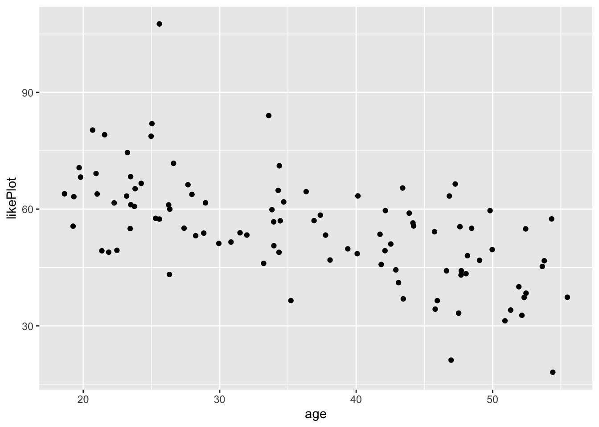
Great, now let’s say we wanted to color the points based on vegetarianism.
We’ll add color = veg inside the aes() call
ggplot(fakeStudy, aes(x = age, y = likePlot, color = veg)) + geom_point()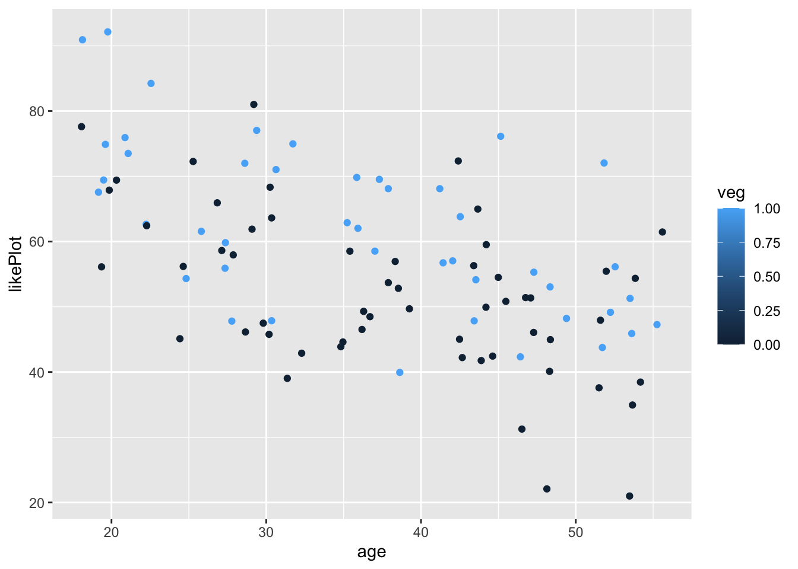
Notice how it is representing veg on a continuous scale from 0 to 1? We can fix this by recoding veg to a factor, so R doesn’t think it can take continuous values.
fakeStudy <- mutate(fakeStudy,
veg = case_when(veg == 0 ~ 'omnivore', veg == 1 ~ 'vegetarian'))
ggplot(fakeStudy, aes(x = age, y = likePlot, color = veg)) + geom_point()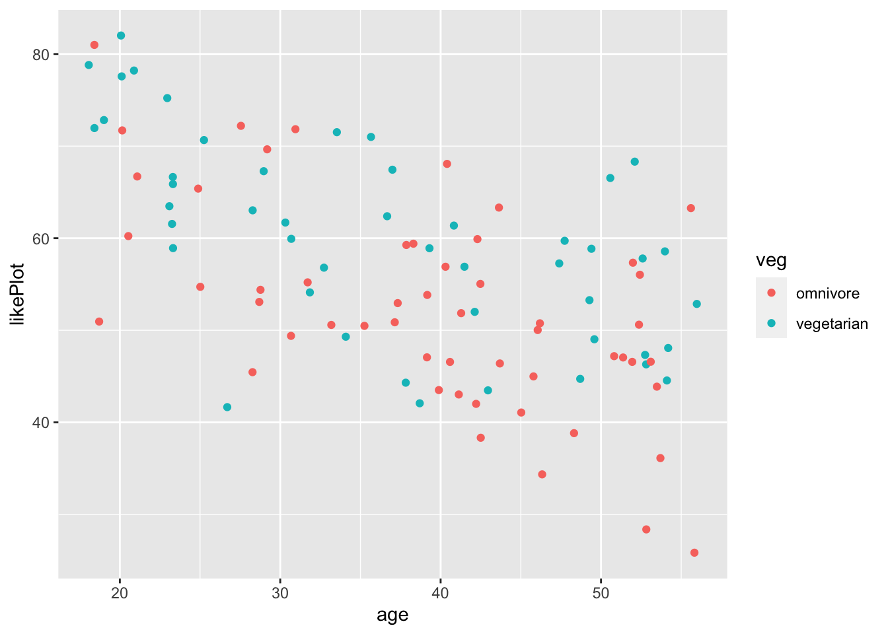
A few aesthetics
This might be a good place to show a few ways to make the plots a bit more reader-friendly.
- We can use themes (https://ggplot2.tidyverse.org/reference/ggtheme.html){target="_blank"} to make them look nicer. I like theme_bw() as a default
- We can use
labs(title = 'my title', x = 'x variable', y = 'y variable'to label our plots more clearly - Since color is also mapped using the initial
aes()call, we can also add it to our labels the same way
ggplot(fakeStudy, aes(x = age, y = likePlot, color = veg)) +
geom_point() +
theme_bw() +
labs(title = 'ggplot liking as a function of age', x = 'age', y = 'ggplot liking', color = 'Diet') 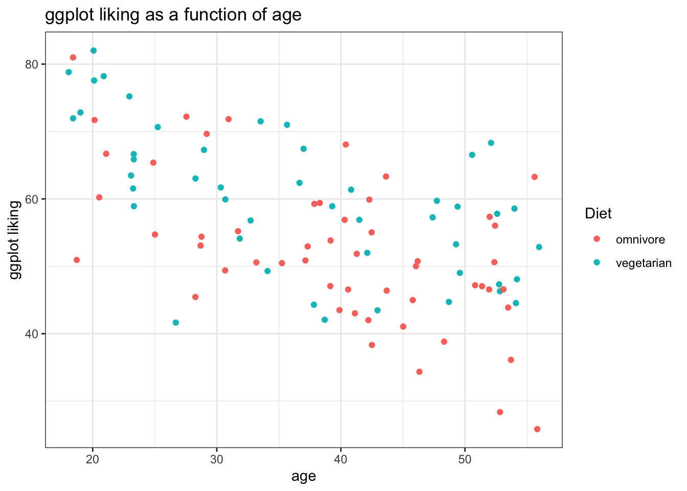
Fitting lines to the data
We can also fit lines to our data with stat_smooth(). The default is a loess function.
- For linear models we can do
stat_smooth(method ='lm') - While these models are great for quick visualization, they should not substitue for more in-depth analysis of data!
Loess:
ggplot(fakeStudy, aes(x = age, y = likePlot, color = veg)) +
geom_point() +
theme_bw() +
labs(title = 'ggplot liking as a function of age', x = 'age', y = 'ggplot liking', color = 'Diet') +
stat_smooth()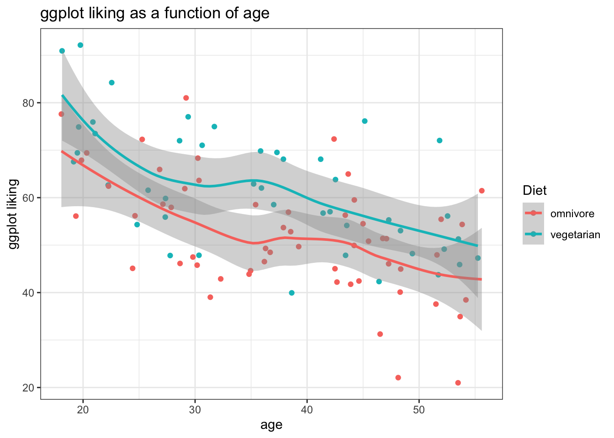
Linear:
ggplot(fakeStudy, aes(x = age, y = likePlot, color = veg)) +
geom_point() +
theme_bw() +
labs(title = 'ggplot liking as a function of age', x = 'age', y = 'ggplot liking', color = 'Diet') +
stat_smooth(method = 'lm') +
scale_color_brewer(palette = 'Set1') # Using a color pallete from RColorBrewer## `geom_smooth()` using formula 'y ~ x'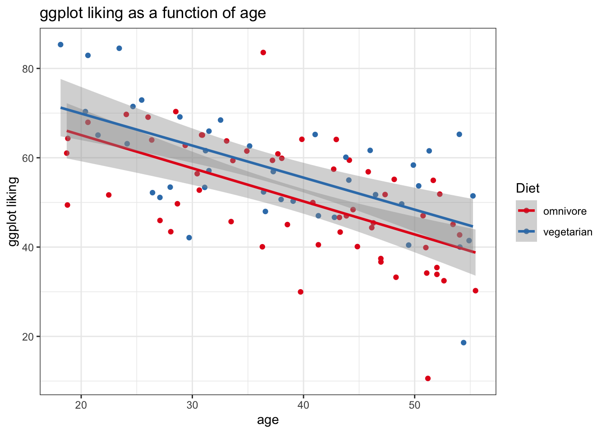
Facetting and Arranging Plots
Sometimes our comparisons are best displayed by multi-panel plots. ggplot makes this super easy
- We can call
facet_wrap('variable name')to make a panel of the plot for each level of a categorical variable - We can also use
facet_wrap(c('variable1', 'variable2'))to facet by multiple variables
fakeStudy <- mutate(fakeStudy,
hand = case_when(
hand == 0 ~ 'Left-Handed',
hand == 1 ~ 'Right-Handed'
))
ggplot(fakeStudy, aes(x = age, y = likePlot, color = veg)) +
geom_point() +
theme_bw() +
labs(title = 'ggplot liking as a function of age, diet, and handedness', x = 'age', y = 'ggplot liking', color = 'Diet') +
stat_smooth(method = 'lm') +
scale_color_brewer(palette = 'Set1') +
facet_wrap('hand')## `geom_smooth()` using formula 'y ~ x'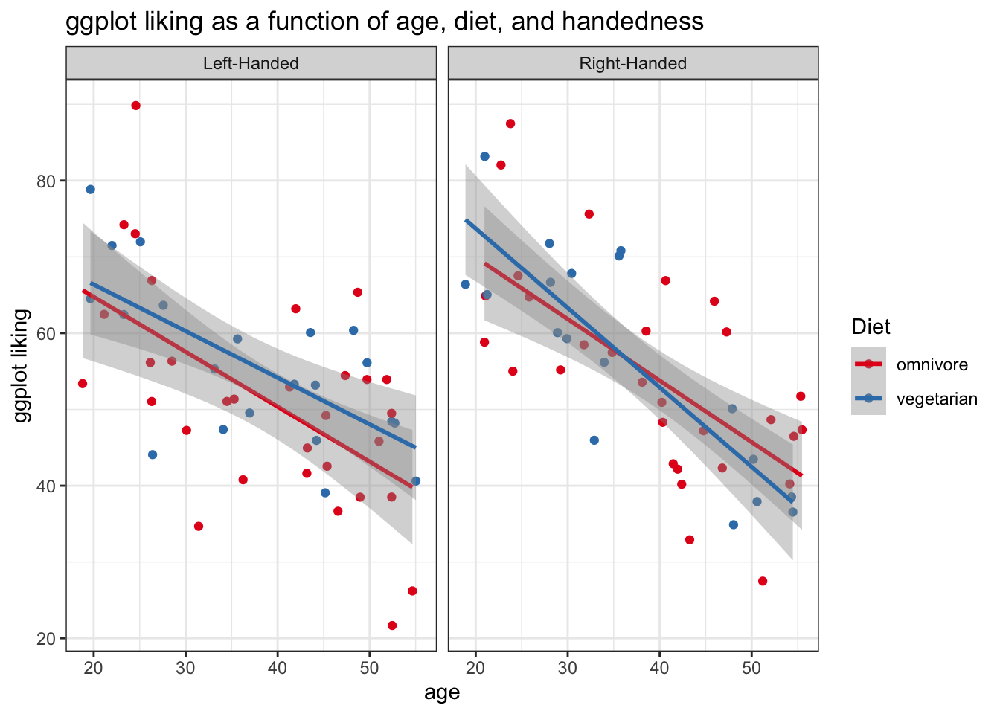
Or, we coluld facet by diet instead.
ggplot(fakeStudy, aes(x = age, y = likePlot, color = hand)) +
geom_point() +
theme_bw() +
labs(title = 'ggplot liking as a function of age, diet, and handedness', x = 'age', y = 'ggplot liking', color = 'Handedness') +
stat_smooth(method = 'lm') +
scale_color_brewer(palette = 'Set1') +
facet_wrap('veg')## `geom_smooth()` using formula 'y ~ x'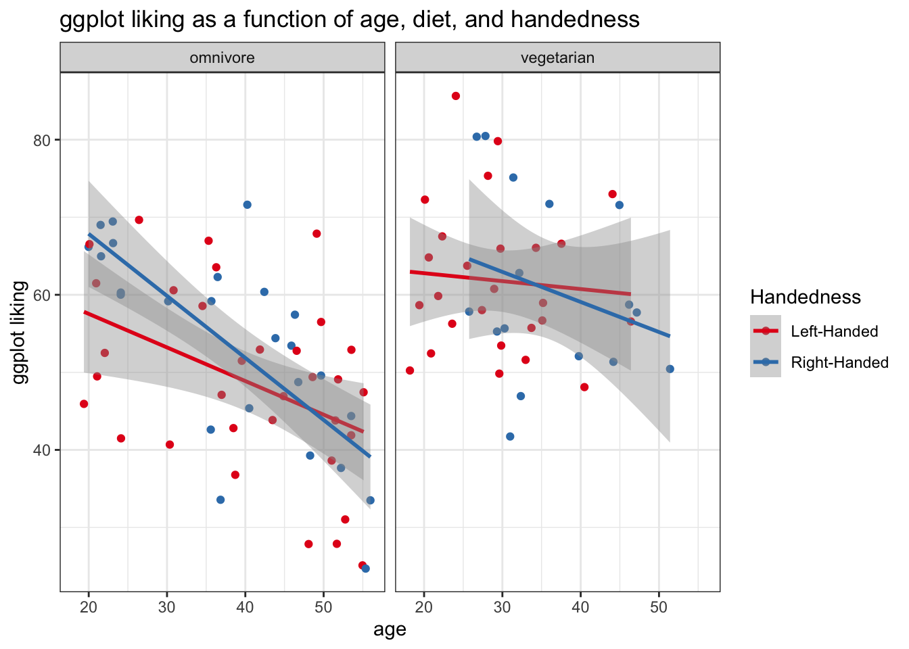
Keep in mind that we can’t really use facet_wrap() with continuous variables – ggplot will try to make a mini-panel for each observed value of your continuous measure. Probably not what we want!
Arranging plots of different types
Using grid.arrange() from the gridExtra package, we can combine multiple plots into one figure. For example
require(gridExtra)## Loading required package: gridExtra##
## Attaching package: 'gridExtra'## The following object is masked from 'package:dplyr':
##
## combineplotA <- ggplot(fakeStudy, aes(x = age, y = likePlot, color = hand)) +
geom_point() +
theme_bw() +
labs(x = 'age', y = 'ggplot liking', color = 'Handedness') +
stat_smooth(method = 'lm') +
scale_color_brewer(palette = 'Set1')
plotB <- ggplot(fakeStudy, aes(x = hand, y = age, color = hand)) +
geom_jitter(width = .05, size = .5, alpha = .6) +
theme_bw() +
scale_color_brewer(palette = 'Set1') +
stat_summary(fun.data = 'mean_cl_boot') +
labs(x = "")
grid.arrange(plotA, plotB, ncol = 1, heights = c(5,4))## `geom_smooth()` using formula 'y ~ x'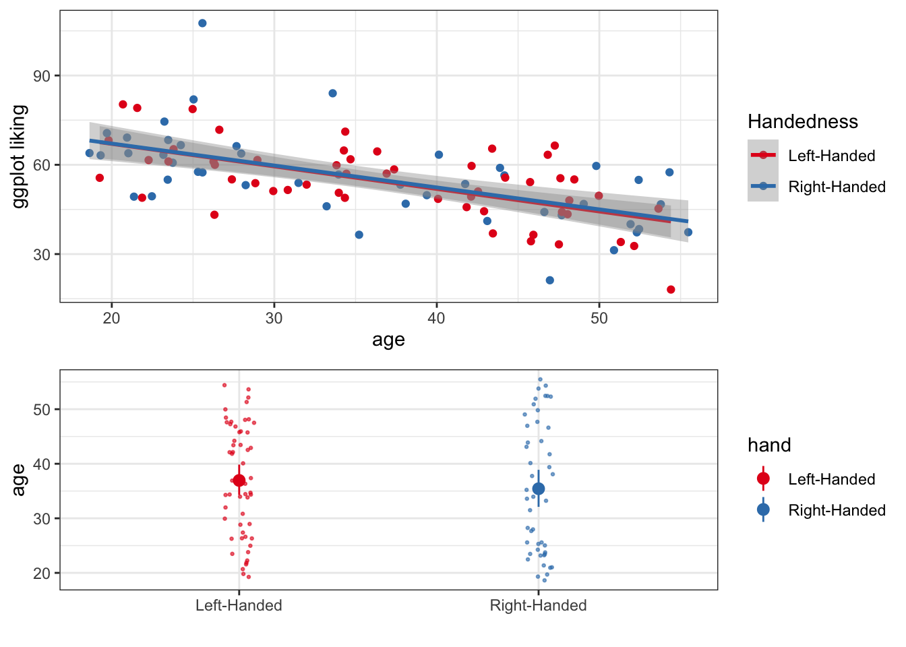
Or we could arrange it a little differently
plotC <- grid.arrange(plotA, plotB, ncol = 2)## `geom_smooth()` using formula 'y ~ x'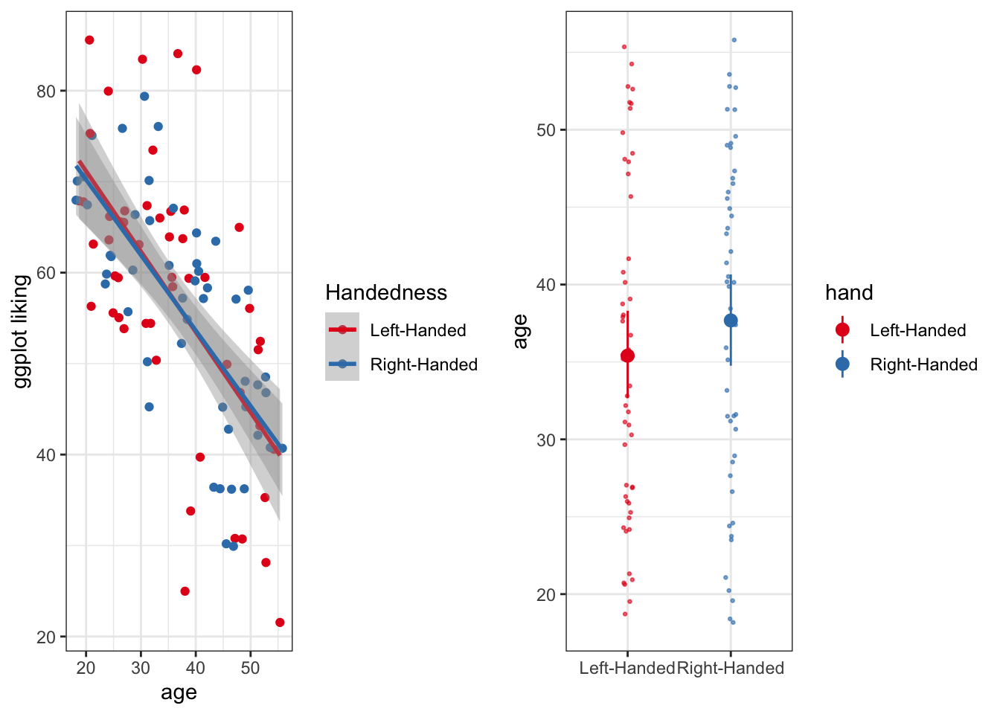
It is also possible to save these arranged plots, just like any other ggplot object
ggsave(plotC, file = 'super_cool_plot.png', height = 5, width = 9)Bar Graph Alternatives
Many people use bar graphs to display data, but in some situations they can hide a lot of important information. For example:
- In many settings bar graphs just display a mean and some measure of uncertainty (standard error or confidence interval) while they don’t really show the full distribution of the data. This can lead us to overemphasize the mean as a a descriptor of the data, rather than a wholistic view of the distribution.
- Bar graphs (without the raw data overplotted) don’t always convey information about sample size
However, there are some really useful alternative methods for displaying continuous outcomes as a function of categorical predictors! Here, let’s look at ggplot liking as a function of vegetarianism.
First just the points:
# We can use source() like this to grab the fuction for geom_flat_violin() from github.
source("https://gist.githubusercontent.com/benmarwick/2a1bb0133ff568cbe28d/raw/fb53bd97121f7f9ce947837ef1a4c65a73bffb3f/geom_flat_violin.R")
ggplot(fakeStudy, aes(x = veg, y = likePlot, color = veg)) +
geom_jitter(width = .05, height = 0) +
theme_bw() +
scale_color_brewer(palette = 'Accent') +
labs(x = 'Diet', y = 'ggplot liking', title ='Ggplot preference by diet') +
theme(legend.position = 'none') # we can make the legend go away Now, we can add a ‘flat violin’ plot to help us visualize the distributions in the data. This is especially helpful when we have a lot of points, so it isn’t so clear just from looking at the raw dots.
Now, we can add a ‘flat violin’ plot to help us visualize the distributions in the data. This is especially helpful when we have a lot of points, so it isn’t so clear just from looking at the raw dots.
# We can use source() like this to grab the fuction for geom_flat_violin() from github.
source("https://gist.githubusercontent.com/benmarwick/2a1bb0133ff568cbe28d/raw/fb53bd97121f7f9ce947837ef1a4c65a73bffb3f/geom_flat_violin.R")
ggplot(fakeStudy, aes(x = veg, y = likePlot, color = veg)) +
geom_jitter(width = .05, height = 0) +
theme_bw() +
geom_flat_violin(aes(fill = veg),
position = position_nudge(x = .1, y = 0), alpha = .7) + # position_nudge pushes the flat violin over a bit
scale_color_brewer(palette = 'Accent') +
scale_fill_brewer(palette = 'Accent') +
labs(x = 'Diet', y = 'ggplot liking', title ='Ggplot preference by diet') +
theme(legend.position = 'none') 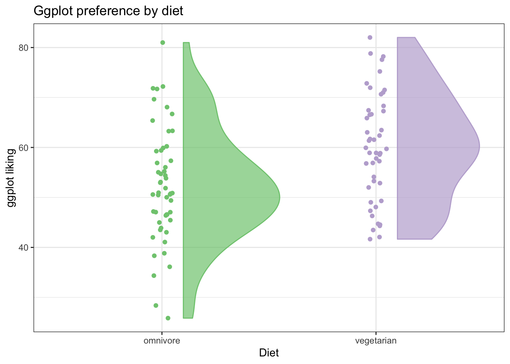
Then we can also add a summary point for the mean (or it could just as easily be the median)
ggplot(fakeStudy, aes(x = veg, y = likePlot, color = veg)) +
geom_jitter(width = .05, height = 0, size = 1, alpha = .7) +
theme_bw() +
geom_flat_violin(aes(fill = veg),
position = position_nudge(x = .1, y = 0), alpha = .5) + # position_nudge pushes the flat violin over a bit
scale_color_brewer(palette = 'Accent') +
scale_fill_brewer(palette = 'Accent') +
labs(x = 'Diet', y = 'ggplot liking', title ='Ggplot preference by diet') +
theme(legend.position = 'none') +
stat_summary(fun.y = mean, geom = 'point', size = 4, position = position_nudge(x =.2))## Warning: `fun.y` is deprecated. Use `fun` instead.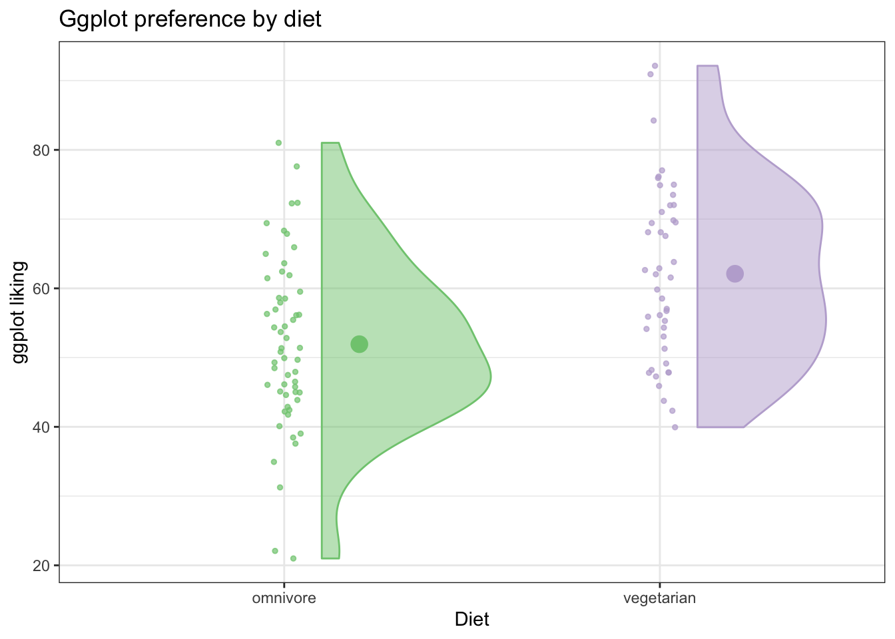
We can also use ggplot’s handy stat_summary(fun.data = 'mean_cl_boot') to calculate bootstrapped confidence intervals about the means (using Hmisc package)
ggplot(fakeStudy, aes(x = veg, y = likePlot, color = veg)) +
geom_jitter(width = .05, height = 0, size = 1, alpha = .7) +
theme_bw() +
geom_flat_violin(aes(fill = veg),
position = position_nudge(x = .1, y = 0), alpha = .5) + # position_nudge pushes the flat violin over a bit
scale_color_brewer(palette = 'Accent') +
scale_fill_brewer(palette = 'Accent') +
labs(x = 'Diet', y = 'ggplot liking', title ='Ggplot preference by diet') +
theme(legend.position = 'none') +
stat_summary(fun.data = 'mean_cl_boot', position = position_nudge(x =.2))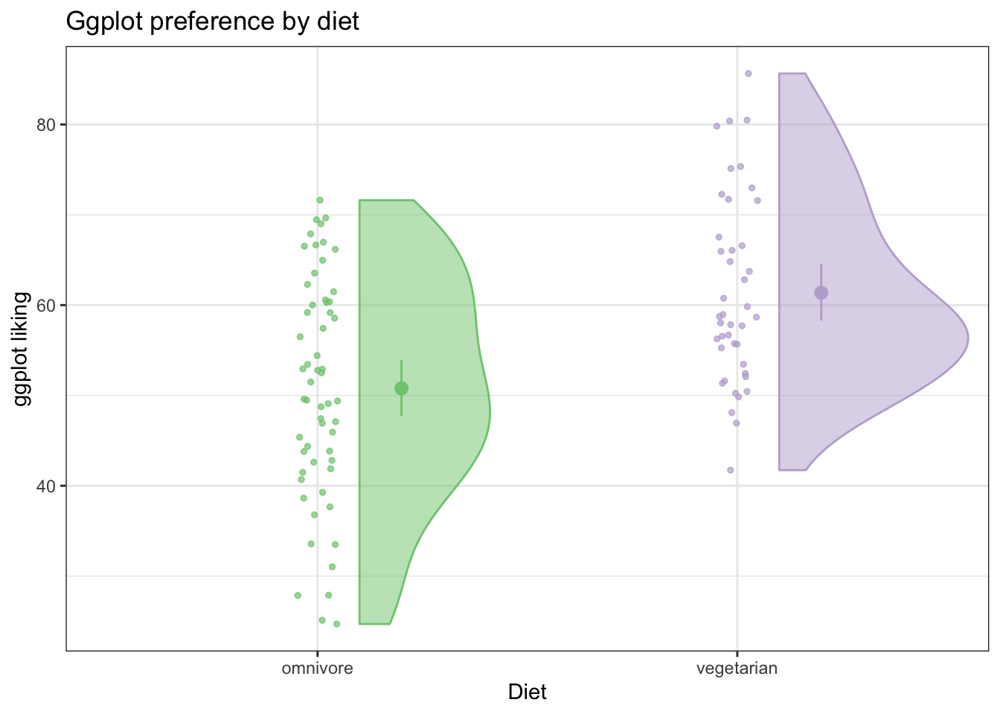
This is a really informative plot! We have all the information a bar graph would show, and way more!
Soon, we’ll get into methods for making your own custom error bars.
Basic Time Series Plot
Lets make up some very simple data on the prices of two different items from 1978-2017
years <- 1978:2017
item1<- rnorm(40,100,5)
item2 <- 1:40 + rnorm(40,100,5)
# Helpful to put it in long form using gather
timeFrame <- data.frame(years, item1, item2) %>%
tidyr::gather(., key = 'item', value = 'price', c(item1, item2)) %>%
mutate(se = runif(nrow(.), 1,5))We can plot the time series using geom_point() and connect the times using geom_line(), coloring by item
ggplot(timeFrame, aes(x = years, y = price, color = item)) +
geom_point() +
geom_line()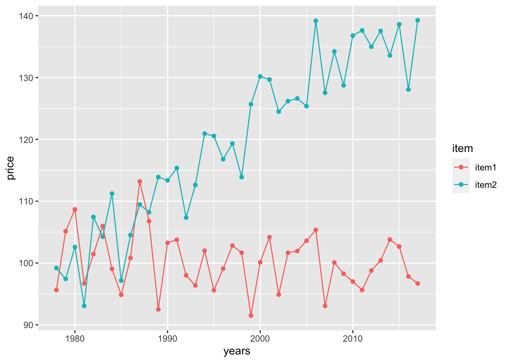
Now, let’s get some representation of our uncertainty into the plot! Notice that there is an included ‘se’ column for the standard error of each observation. Let’s plot error bars of +/- 1 standard error above and below each point.
- We can specificy the range of the errorbars with the
yminandymaxarguments - It can also look nice to set width to 0
ggplot(timeFrame, aes(x = years, y = price, color = item)) +
geom_point() +
geom_line() +
geom_errorbar(aes(ymin = price - se, ymax = price + se), width = 0) +
theme_bw() +
labs(x = 'Year', y = 'Price', color = 'Item')
Alternatively, we can use shading to express our uncertainty more continuously. This time, lets shade the error within 2 standard errors of each measured point
ggplot(timeFrame, aes(x = years, y = price)) +
geom_point(aes(color = item)) +
geom_line(aes(color = item)) +
geom_ribbon(aes(ymin = price - 2*se, ymax = price + 2*se, fill = item),
alpha = .2, show.legend = F) +
theme_bw() +
labs(x = 'Year', y = 'Price', color = 'Item') +
scale_color_brewer(palette = 'Dark2') +
scale_fill_brewer(palette = 'Dark2')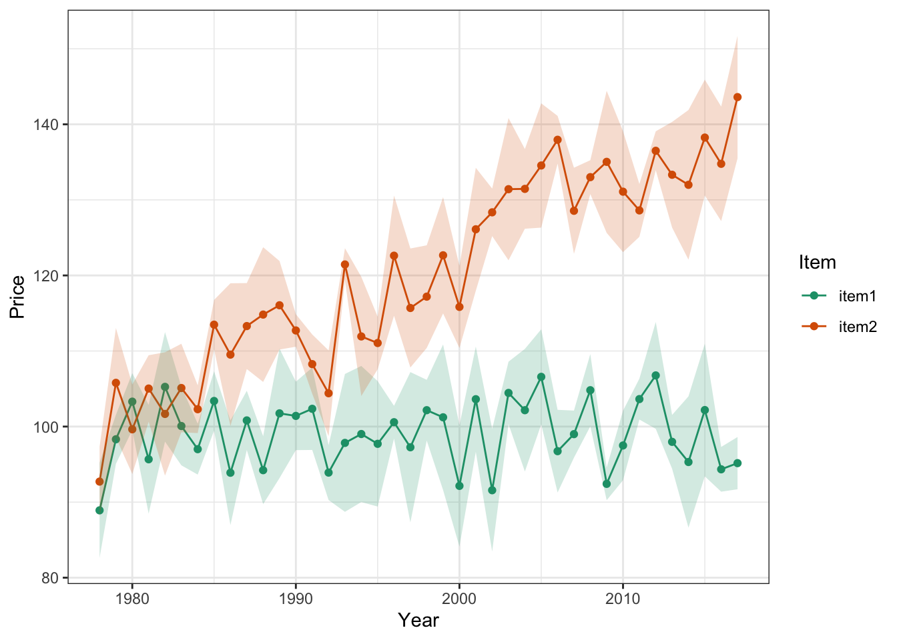
Notice we’ve had to reformat a few calls here to adjust the aesthetic mapping…this happens sometimes when we want certain mappings to apply to ONLY certain parts of the plot. When we put the aes() call inside a geom() call, the mapping applies only to that geometrical object.
Remember! It’s very important to always display the predictive uncertainty along with the estimates or mean predicted by your model. Otherwise, we don’t have any idea of how confident the model’s predictions are.
Next: More Advanced ggplot2 Plotting (Using model fits + raw data)